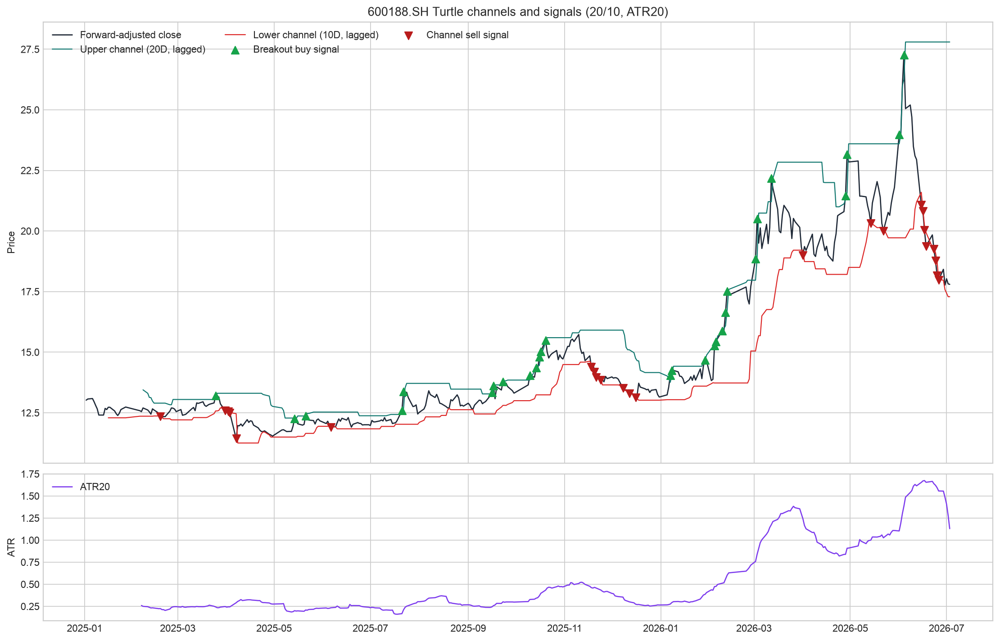
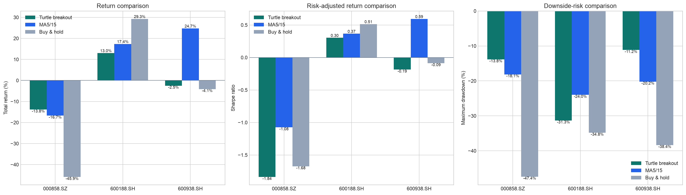
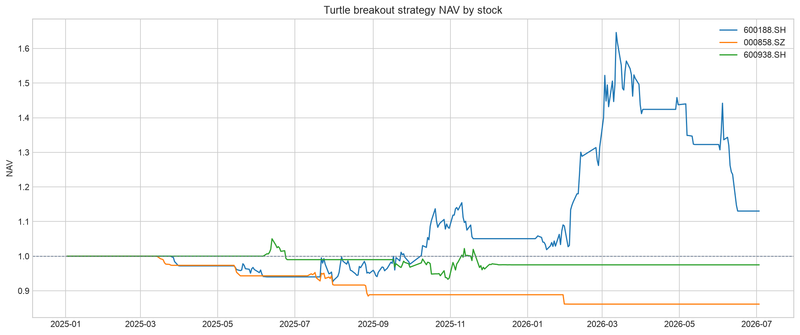
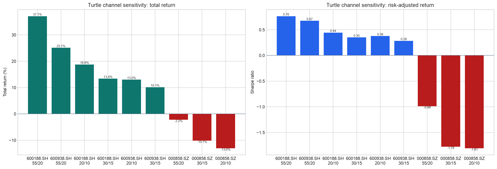

海龟突破策略回测与双均线比较
直接读取 quant_a_share_daily/data/processed/daily_price.pkl；相同数据区间：2025-01-02 至 2026-07-03；T 日信号、T+1 开盘模拟成交。
策略与基准口径
- 策略层：已注册的
turtle_breakout_v1，不是手工复写的简化规则。 - S1：20 日突破入场、10 日通道退出；S2：55 日突破入场、20 日通道退出。
- ATR20 风险单位：每单位风险 1%，初始止损 2 ATR，价格每上行 0.5 ATR 可加仓，最多 4 单位。
- 比较模式：每次只回测一只股票，单标的上限由默认 5% 调为 100%，使资金使用方式更接近 Task 3 的单标的双均线回测；其余策略组件、成本和 T+1 规则保持一致。
- Buy & Hold：同一股票、同一数据窗口、相同初始资金，在首个交易日按收盘价建仓并持有至期末；不根据策略信号调仓，按被动基准口径不计交易成本（成本为 0）。
Python 实现步骤
- 从本地 processed 数据库加载单只股票日频 OHLCV。
- 设定唐奇安上轨/下轨周期：默认上轨 20 日、下轨 10 日；通道均滞后一天，避免使用当日未来信息。
- 以原始 OHLC 与前一日收盘价计算 True Range，并滚动计算 ATR20。
- 收盘价突破滞后上轨产生买入信号，跌破滞后下轨产生卖出信号；仅标记状态切换时的事件。
- 绘制收盘价、高低通道、买卖信号及 ATR 图。
- 由项目回测引擎执行 T 日信号、T+1 开盘模拟成交，并计算四类绩效指标。
数据审计
每只股票的原始库行数、覆盖范围、重复记录与开盘价有效性见 local_database_audit.csv。单标的实验仅在内存中筛选代码，不创建或读取派生 processed 数据库。
核心指标摘要
先比较总收益、年化收益、夏普和最大回撤；“海龟-B&H”和“均线-B&H”表示相对不换仓基准的总收益差。
| 股票 | 海龟收益 | 均线收益 | 买入持有 | 海龟-B&H | 均线-B&H | 海龟年化 | 均线年化 | B&H 年化 | 海龟夏普 | 均线夏普 | B&H 夏普 | 海龟回撤 | 均线回撤 | B&H 回撤 | 海龟交易 | 均线交易 | B&H 交易 | 海龟成本 | 均线成本 | B&H 成本 |
|---|---|---|---|---|---|---|---|---|---|---|---|---|---|---|---|---|---|---|---|---|
| 000858.SZ | -13.85% | -16.73% | -45.92% | 32.08% | 29.19% | -9.85% | -11.97% | -34.81% | -1.839 | -1.075 | -1.675 | -13.85% | -18.14% | -47.39% | 11 | 28 | 0 | ¥3,125.67 | ¥11,933.83 | ¥0.00 |
| 600188.SH | 13.03% | 17.37% | 29.26% | -16.22% | -11.88% | 8.90% | 11.80% | 19.56% | 0.304 | 0.366 | 0.514 | -31.33% | -23.99% | -34.83% | 17 | 34 | 0 | ¥5,827.03 | ¥15,389.34 | ¥0.00 |
| 600938.SH | -2.50% | 24.75% | -4.12% | 1.62% | 28.86% | -1.75% | 16.64% | -2.88% | -0.187 | 0.594 | -0.089 | -11.15% | -20.21% | -38.36% | 41 | 20 | 0 | ¥2,885.48 | ¥10,701.53 | ¥0.00 |
完整绩效指标矩阵：海龟、MA5/15 与 Buy & Hold
按 Lecture 3 的收益、风险、交易质量、综合四类逐项比较。数值差均为策略值减去 Buy & Hold；最大回撤的正差代表回撤较小。
收益类
| 股票 | 指标 | 海龟 | MA5/15 | Buy & Hold | 海龟-B&H | 均线-B&H |
|---|---|---|---|---|---|---|
| 000858.SZ | 总收益率 | -13.85% | -16.73% | -45.92% | 32.08% | 29.19% |
| 000858.SZ | 年化收益率 | -9.85% | -11.97% | -34.81% | 24.96% | 22.85% |
| 600188.SH | 总收益率 | 13.03% | 17.37% | 29.26% | -16.22% | -11.88% |
| 600188.SH | 年化收益率 | 8.90% | 11.80% | 19.56% | -10.66% | -7.76% |
| 600938.SH | 总收益率 | -2.50% | 24.75% | -4.12% | 1.62% | 28.86% |
| 600938.SH | 年化收益率 | -1.75% | 16.64% | -2.88% | 1.14% | 19.53% |
风险类
| 股票 | 指标 | 海龟 | MA5/15 | Buy & Hold | 海龟-B&H | 均线-B&H |
|---|---|---|---|---|---|---|
| 000858.SZ | 年化波动率 | 5.36% | 11.13% | 20.78% | -15.42% | -9.65% |
| 000858.SZ | 最大回撤 | -13.85% | -18.14% | -47.39% | 33.55% | 29.26% |
| 600188.SH | 年化波动率 | 29.33% | 32.23% | 38.03% | -8.70% | -5.81% |
| 600188.SH | 最大回撤 | -31.33% | -23.99% | -34.83% | 3.50% | 10.84% |
| 600938.SH | 年化波动率 | 9.37% | 28.04% | 32.56% | -23.20% | -4.53% |
| 600938.SH | 最大回撤 | -11.15% | -20.21% | -38.36% | 27.20% | 18.15% |
交易质量类
| 股票 | 指标 | 海龟 | MA5/15 | Buy & Hold | 海龟-B&H | 均线-B&H |
|---|---|---|---|---|---|---|
| 000858.SZ | 成交笔数 | 11 | 28 | 0 | 11 | 28 |
| 000858.SZ | 已平仓交易数 | 5 | 14 | 0 | 5 | 14 |
| 000858.SZ | 胜率 | 0.00% | 14.29% | 0.00% | 0.00% | 14.29% |
| 000858.SZ | 平均盈利 | ¥0.00 | ¥24,713.71 | ¥0.00 | ¥0.00 | ¥24,713.71 |
| 000858.SZ | 平均亏损 | ¥-27,541.85 | ¥-17,829.38 | ¥0.00 | ¥-27,541.85 | ¥-17,829.38 |
| 000858.SZ | 盈亏比 | 0.000 | 1.386 | 0.000 | 0.000 | 1.386 |
| 000858.SZ | 单笔期望收益 | ¥-27,541.85 | ¥-11,751.79 | ¥0.00 | ¥-27,541.85 | ¥-11,751.79 |
| 000858.SZ | 佣金 | ¥1,404.79 | ¥5,284.66 | ¥0.00 | ¥1,404.79 | ¥5,284.66 |
| 000858.SZ | 印花税 | ¥1,653.39 | ¥6,391.94 | ¥0.00 | ¥1,653.39 | ¥6,391.94 |
| 000858.SZ | 过户费 | ¥67.49 | ¥257.23 | ¥0.00 | ¥67.49 | ¥257.23 |
| 000858.SZ | 总交易成本 | ¥3,125.67 | ¥11,933.83 | ¥0.00 | ¥3,125.67 | ¥11,933.83 |
| 600188.SH | 成交笔数 | 17 | 34 | 0 | 17 | 34 |
| 600188.SH | 已平仓交易数 | 6 | 17 | 0 | 6 | 17 |
| 600188.SH | 胜率 | 33.33% | 23.53% | 0.00% | 33.33% | 23.53% |
| 600188.SH | 平均盈利 | ¥242,156.64 | ¥116,316.22 | ¥0.00 | ¥242,156.64 | ¥116,316.22 |
| 600188.SH | 平均亏损 | ¥-88,155.76 | ¥-22,153.56 | ¥0.00 | ¥-88,155.76 | ¥-22,153.56 |
| 600188.SH | 盈亏比 | 2.747 | 5.250 | 0.000 | 2.747 | 5.250 |
| 600188.SH | 单笔期望收益 | ¥21,948.37 | ¥10,427.57 | ¥0.00 | ¥21,948.37 | ¥10,427.57 |
| 600188.SH | 佣金 | ¥2,566.74 | ¥6,766.56 | ¥0.00 | ¥2,566.74 | ¥6,766.56 |
| 600188.SH | 印花税 | ¥3,136.20 | ¥8,292.95 | ¥0.00 | ¥3,136.20 | ¥8,292.95 |
| 600188.SH | 过户费 | ¥124.09 | ¥329.83 | ¥0.00 | ¥124.09 | ¥329.83 |
| 600188.SH | 总交易成本 | ¥5,827.03 | ¥15,389.34 | ¥0.00 | ¥5,827.03 | ¥15,389.34 |
| 600938.SH | 成交笔数 | 41 | 20 | 0 | 41 | 20 |
| 600938.SH | 已平仓交易数 | 37 | 10 | 0 | 37 | 10 |
| 600938.SH | 胜率 | 78.38% | 50.00% | 0.00% | 78.38% | 50.00% |
| 600938.SH | 平均盈利 | ¥903.33 | ¥107,083.42 | ¥0.00 | ¥903.33 | ¥107,083.42 |
| 600938.SH | 平均亏损 | ¥-6,323.06 | ¥-57,102.97 | ¥0.00 | ¥-6,323.06 | ¥-57,102.97 |
| 600938.SH | 盈亏比 | 0.143 | 1.875 | 0.000 | 0.143 | 1.875 |
| 600938.SH | 单笔期望收益 | ¥-659.13 | ¥24,990.23 | ¥0.00 | ¥-659.13 | ¥24,990.23 |
| 600938.SH | 佣金 | ¥1,372.83 | ¥4,681.31 | ¥0.00 | ¥1,372.83 | ¥4,681.31 |
| 600938.SH | 印花税 | ¥1,454.25 | ¥5,791.16 | ¥0.00 | ¥1,454.25 | ¥5,791.16 |
| 600938.SH | 过户费 | ¥58.39 | ¥229.06 | ¥0.00 | ¥58.39 | ¥229.06 |
| 600938.SH | 总交易成本 | ¥2,885.48 | ¥10,701.53 | ¥0.00 | ¥2,885.48 | ¥10,701.53 |
综合类
| 股票 | 指标 | 海龟 | MA5/15 | Buy & Hold | 海龟-B&H | 均线-B&H |
|---|---|---|---|---|---|---|
| 000858.SZ | 无风险利率 | 0.00% | 0.00% | 0.00% | 0.00% | 0.00% |
| 000858.SZ | 夏普比率 | -1.839 | -1.075 | -1.675 | -0.164 | 0.600 |
| 000858.SZ | 卡玛比率 | -0.712 | -0.660 | -0.735 | 0.023 | 0.075 |
| 600188.SH | 无风险利率 | 0.00% | 0.00% | 0.00% | 0.00% | 0.00% |
| 600188.SH | 夏普比率 | 0.304 | 0.366 | 0.514 | -0.211 | -0.148 |
| 600188.SH | 卡玛比率 | 0.284 | 0.492 | 0.562 | -0.277 | -0.070 |
| 600938.SH | 无风险利率 | 0.00% | 0.00% | 0.00% | 0.00% | 0.00% |
| 600938.SH | 夏普比率 | -0.187 | 0.594 | -0.089 | -0.098 | 0.682 |
| 600938.SH | 卡玛比率 | -0.157 | 0.823 | -0.075 | -0.082 | 0.899 |
通道、ATR 与策略图表




通道周期与标的敏感性实验
为隔离核心通道参数影响，本实验只启用 S1 单系统，分别测试上/下通道 20/10、30/15、55/20，ATR 固定为 20。样本内年化收益最佳组合是 600188.SH 55/20，年化收益 24.57%、夏普 0.764。这仅用于观察敏感性，不能作为未来参数选择依据。
| 股票 | 上轨周期 | 下轨周期 | ATR周期 | 总收益 | B&H收益 | 策略-B&H | 年化 | 波动率 | 最大回撤 | 夏普 | 卡玛 | 胜率 | 盈亏比 | 期望收益 | 交易笔数 | 交易成本 |
|---|---|---|---|---|---|---|---|---|---|---|---|---|---|---|---|---|
| 600188.SH | 55 | 20 | 20 | 37.10% | 29.26% | 7.85% | 24.57% | 32.15% | -28.92% | 0.764 | 0.850 | 100.00% | 0.000 | ¥185,751.91 | 8 | ¥2,233.49 |
| 600938.SH | 55 | 20 | 20 | 25.12% | -4.12% | 29.23% | 16.88% | 25.05% | -13.89% | 0.674 | 1.215 | 33.33% | 8.114 | ¥83,903.87 | 8 | ¥2,559.06 |
| 600188.SH | 20 | 10 | 20 | 18.76% | 29.26% | -10.50% | 12.71% | 28.60% | -26.62% | 0.444 | 0.477 | 33.33% | 3.392 | ¥31,485.37 | 18 | ¥5,820.88 |
| 600188.SH | 30 | 15 | 20 | 13.40% | 29.26% | -15.86% | 9.15% | 26.05% | -22.89% | 0.351 | 0.400 | 33.33% | 3.368 | ¥22,523.00 | 19 | ¥4,871.04 |
| 600938.SH | 20 | 10 | 20 | 13.02% | -4.12% | 17.14% | 8.89% | 23.57% | -13.90% | 0.377 | 0.640 | 40.00% | 4.175 | ¥26,241.33 | 14 | ¥4,348.86 |
| 600938.SH | 30 | 15 | 20 | 10.15% | -4.12% | 14.26% | 6.96% | 24.48% | -13.89% | 0.284 | 0.501 | 40.00% | 3.320 | ¥20,489.80 | 14 | ¥4,263.02 |
| 000858.SZ | 55 | 20 | 20 | -2.20% | -45.92% | 43.72% | -1.54% | 1.56% | -2.50% | -0.987 | -0.613 | 0.00% | 0.000 | ¥-21,826.79 | 2 | ¥652.63 |
| 000858.SZ | 30 | 15 | 20 | -10.12% | -45.92% | 35.80% | -7.16% | 4.03% | -10.40% | -1.776 | -0.688 | 0.00% | 0.000 | ¥-25,160.13 | 9 | ¥2,431.47 |
| 000858.SZ | 20 | 10 | 20 | -13.05% | -45.92% | 32.87% | -9.27% | 5.13% | -13.05% | -1.807 | -0.711 | 0.00% | 0.000 | ¥-25,954.81 | 11 | ¥2,891.99 |
适应场景与使用心得
本样本中，海龟策略相对于 MA5/15 的最大收益改善出现在 000858.SZ，差额为 2.89%。表格与图表同时保留 Buy & Hold，以避免把“战胜另一条规则”误读为“战胜不换仓基准”。
- 海龟法则更适合存在持续方向、突破后能延续的趋势行情；上轨突破与 ATR 加仓可捕捉较长趋势。
- 横盘震荡中会出现突破失败和连续小亏；应结合最大回撤、期望收益和交易成本，而不只看胜率。
- 通道越短，信号越灵敏、交易越频繁；通道越长，过滤噪声更强但进场更滞后。参数必须经滚动样本与样本外验证。
- ATR 仓位管理使高波动标的自动降低单位股数；实盘还需遵守单股权重、停牌、涨跌停与组合总风险限制。
所有结果均为本地历史数据上的研究回测，不构成投资建议或未来收益承诺。